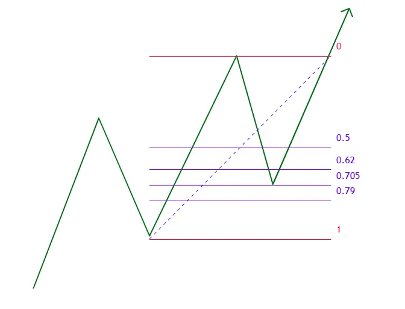

Optimal Trade Entry (OTE)
Optimal Trade Entry (OTE) adalah pola andalan klasik dari ICT. Ini adalah zona retracement Fibonacci spesifik di dalam area diskon atau premium, tempat probabilitas kembalinya tren paling tinggi dengan risiko sekecil mungkin. OTE bukan tombol entry otomatis — ia adalah filter lokasi, bukan sinyal.
Apa itu OTE?
OTE berada pada level retracement Fibonacci antara 62% (0.62) dan 79% (0.79), dengan titik "Sweet Spot" di 70.5% (0.705).
Zona ini mewakili titik keseimbangan terbaik di mana institusi bersedia melanjutkan injeksi modal (buy/sell) — bukan di 50% (Equilibrium, netral), tapi lebih dalam lagi ke sisi diskon/premium.

| Level | Arti |
|---|---|
| 0.00 | Ujung swing (sering jadi TP pertama) |
| 0.50 | Equilibrium — batas netral Premium/Discount, bukan titik entry |
| 0.618 (62%) | Gerbang masuk pertama ke zona diskon/premium |
| 0.705 | Sweet Spot — titik paling sering direaksi tajam |
| 0.79 | Diskon/premium terdalam, pertahanan terakhir sebelum invalid |
| 1.00 | Titik pangkal swing — kalau tembus, ide trade invalid |
Timeframe: HTF untuk Zona, LTF untuk Trigger
Materi ini sering nggak eksplisit soal timeframe, padahal ini justru kunci biar OTE nggak dipakai asal-asalan. Alurnya dua lapis:
- HTF (H4/H1/M15) — dipakai untuk menentukan impulse leg mana yang sah (yang mematahkan struktur/BOS-MSS) dan menarik Fibonacci dari situ. Di sinilah zona OTE ditentukan.
- LTF (M5/M1) — begitu harga masuk ke zona OTE hasil tarikan HTF, kamu turun ke timeframe kecil untuk mencari trigger konfirmasi: CHoCH, displacement, atau CISD. Trigger inilah yang jadi alasan entry, bukan sekadar harga "menyentuh angka 0.705".
Jadi: HTF menjawab "di mana", LTF menjawab "kapan".
Mengapa OTE Berhasil?
Pasar tidak bergerak dalam satu garis lurus. Setelah dorongan/ekspansi, harga akan mengambil napas (retracement). Kembali ke OTE memastikan kamu tidak membeli saat harga sedang mahal, dan tidak menjual saat harga sedang murah. Kamu masuk persis saat algoritma menyentuh zona manipulasi untuk melanjutkan Order Flow.
Bagaimana Menggunakannya?
- Pastikan kamu berada dalam arah Institutional Order Flow yang benar (contoh: tren naik).
- Temukan kaki dorongan kuat (impulse leg) yang berhasil memecah struktur (BOS/MSS) — di HTF.
- Tarik alat Fibonacci dari:
- Low ke High untuk tren naik (setup Buy).
- High ke Low untuk tren turun (setup Sell).
- Tandai level 62%, 70.5%, dan 79%.
- Tunggu harga masuk zona itu, lalu turun ke LTF untuk cari trigger (CHoCH/displacement).
Kriteria Trading
- Entry: Limit order di 62% atau 70.5%, ATAU tunggu konfirmasi tambahan seperti Order Block atau FVG yang konfluensi (bertepatan) di dalam zona OTE — ini lebih aman daripada limit order buta.
- Invalidasi (SL): Stop Loss diletakkan di bawah/atas titik awal tarikan Fib (level 1.0/100%), atau beberapa pips di luarnya.
- Target (DOL):
- TP 1: Level 0% (High/Low yang baru terbentuk).
- TP 2 & 3: Ekstensi Fibonacci di level -27% atau -62%, atau liquidity pool berikutnya.
Contoh Konkret (XAU/Gold)
- Identifikasi Expansion: XAU melesat dari 2300 ke 2350 (leg bullish, BOS valid di HTF).
- Tarik Fibonacci: Dari Low (2300) ke High (2350).
- Tandai Zona OTE:
- 62% = 2319
- 70.5% = 2314.7
- 79% = 2310.5
- Cari Confluence: Kalau di area 2314 ada Bullish FVG atau Order Block, area itu jadi sangat kuat.
- Turun ke LTF (M5/M1): Tunggu CHoCH kecil di area itu sebagai trigger.
- Eksekusi: Buy Limit di 2315, SL di bawah 2300, target 2350+.
Kapan OTE TIDAK Boleh Dipakai
OTE gampang disalahgunakan kalau ditarik di setiap pullback. Berikut sinyal supaya kamu skip, bukan paksa entry:
- Setup muncul di tengah range, tanpa arah HTF yang jelas.
- Liquidity sudah diambil, tapi tidak ada displacement meyakinkan setelahnya.
- Harga sudah terlalu jauh (extended) sehingga entry-nya jadi chase, bukan OTE lagi.
- POI (OB/FVG) di dalam zona OTE sudah berkali-kali disentuh sebelumnya (tidak fresh).
- Kamu cuma mencari-cari alasan supaya "kelihatan" valid.
Checklist cepat sebelum entry di OTE: - [ ] Context HTF jelas (bukan cuma pola kecil di LTF)? - [ ] Draw on Liquidity sudah ditentukan? - [ ] POI di dalam zona OTE masih fresh? - [ ] Ada sweep/displacement/MSS/CISD yang mendukung di LTF? - [ ] Entry tidak terlalu jauh dari zona terbaik (bukan chase)? - [ ] SL & TP sudah objektif sebelum entry?
Kesalahan Umum Trader
- Menarik Fibonacci di leg kecil yang bukan expansion utama.
- Entry di OTE tanpa peduli bias Daily (misal Buy di OTE padahal Daily Bias Bearish).
- Terlalu kaku menunggu 0.705 persis, padahal 0.618 sudah kasih reaksi valid dengan confluence kuat.
- Pasang lot besar cuma karena merasa OTE adalah "titik sakti".
OTE bukan sulap yang bisa ditarik di setiap gelombang naik-turun grafik. Tanpa konteks Time of Day (Killzones), Draw on Liquidity, dan trigger di LTF, level Fibonaccimu tak berguna! OTE adalah area untuk mulai waspada, bukan tombol untuk langsung entry.